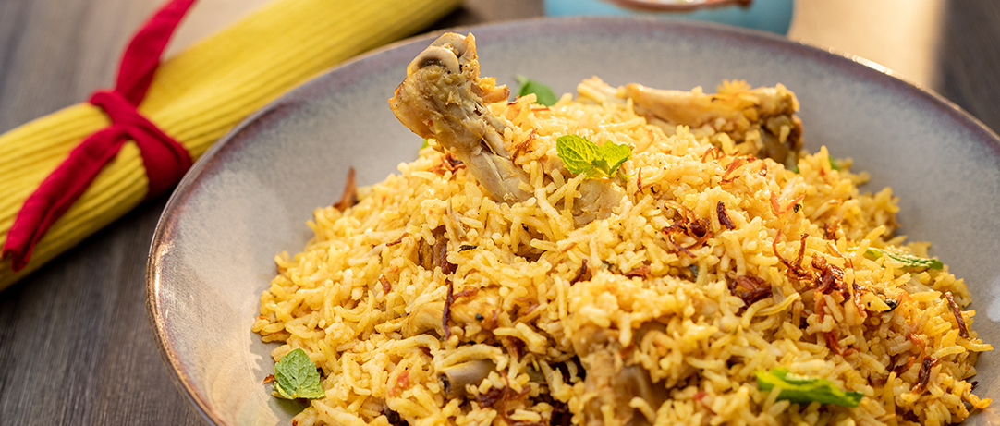

Chicken Biryani
Ingredient
- Ghee- 4 tablespoons.
- Cinnamon- 2, 1 inch pieces, coarsely crushed.
- Maggi Magic Cubes-Chicken- 3 cubes, crumbled.
- Cloves- 6, coarsely crushed.
- Green Cardamom- 2, coarsely crushed.
- Star Anise- 1, coarsely crushed.
- Whole Peppercorns- 1 teaspoon, coarsely crushed.
- Black Cardamom- 1, coarsely crushed.
- Onion- 2 large, sliced.
- Ginger-Garlic Paste- 1 teaspoon.
- Red Chilli Powder- 1 teaspoon.
- Turmeric Powder- 1/2 teaspoon.
- Coriander Powder- 4 teaspoon.
- Tomatoes- 2 large, sliced.
- Chicken- 500 grms, cut into small pieces.
- Water- 3 1/2 cups (500 ml).
- Rice- 1 1/3 cups (200g).
- Salt to taste.
- Coriander Leaves- 3 tablespoons, chopped.
- Mint Leaves- 3 tablespoons, chopped.

Methods
- Heat ghee in a pan, and add cinnamon, cloves, green cardamom,
star anise, whole peppercorns and black cardamom. Then, add
onions and saute till golden-brown.
- Add the ginger-garlic paste and saute till the raw smell is
gone. Add the red chilli powder, turmeric powder and coriander
powder, saute for a minute.
- Add tomatoes and saute till they are well-cooked. Then, add
the chicken pieces and saute for 5 minutes.
- Add water, crumbled Maggi Magic Cubes (Chicken), mint leaves
and coriander leaves. Mix well and add salt to taste. Add the
rice when the water starts to boil.
- Lower the flame, cover and cook till the rice and chicken are
done. Serve hot.